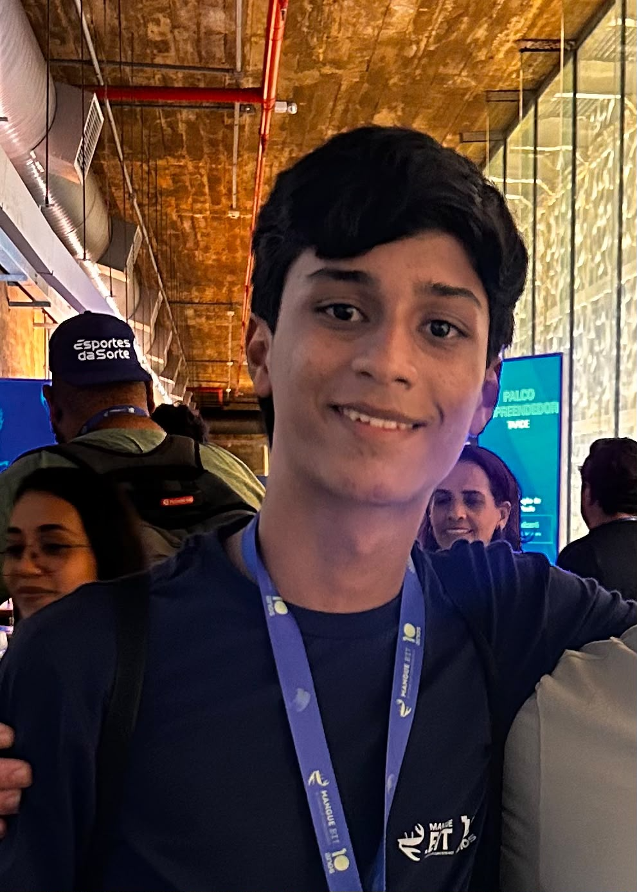

CHIEF TECHNOLOGY OFFICER
Pedro Vitor
CTO / Lumos Connect
Tecnologia • Desenvolvimento • Inovação
Liderança tecnológica e desenvolvimento de soluções digitais na Lumos Connect.
Vamos nos conectar.
Um clique para conversar ou conhecer mais sobre meu trabalho.
Sobre Pedro.
Pedro Vitor é CTO da Lumos Connect, atuando na liderança tecnológica da startup e na construção de soluções digitais.
Tecnologia em movimento.
Áreas gerais associadas à função de CTO; podem ser ajustadas conforme a experiência de Pedro.